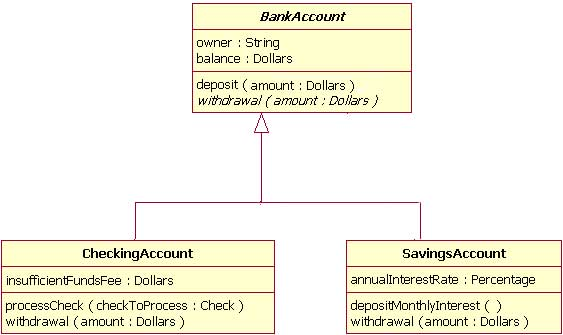
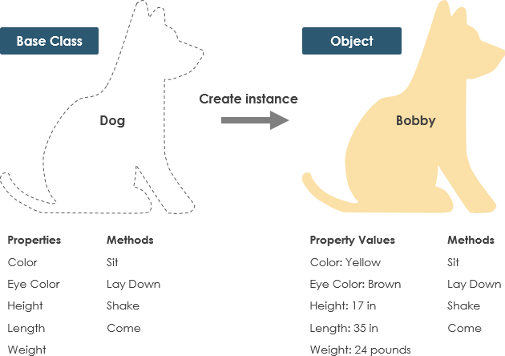

Wprowadzenie#
Prowadzący zajęcia:#
Dr Kamil Smolak; email: kamil.smolak@upwr.edu.pl
Jaki jest cel tego kursu?#
Naszym zadaniem jest zdobyć wiedzę z zakresu programowania w środowisku Systemów Informacji Przestrzennej (GIS). Kurs ma na celu zapoznanie z możliwościami przetwarzania danych przestrzennych z wykorzystaniem języka programowania Python. Docelowo nauczymy się wykorzystywać język Python do:
Automatyzacji zadań związanych z przetwarzaniem danych przestrzennych
Rozszerzania funkcjonalności środowiska GIS
Projektowania i implementowania analiz przestrzennych
System pracy i program#
Moduł 1 - Organizacja bibliotek programistycznych - funckje, klasy, moduły
Moduł 2 - QGIS - obsługa konsoli, proste operacje na danych przestrzennych
Moduł 3 - Operacje na warstwach wektorowych, zapis geometrii w środowisku GIS
Moduł 4 - Operatory przestrzenne i kalkulator danych
Moduł 5 - Operacje na warstwach rastrowych
Moduł 6 - Własny plugin rozszerzający funkcjonalność środowiska QGIS (projekt)
Moduł 7 - Inne sposoby przetwarzania danych przestrzennych w Pythonie
Zasady kursu#
Wykłady odbywają się co dwa tygodnie, pomiędzy wykładami są dwie sesje ćwiczeń
Wiedza teoretycznia przekazywana jest jedynie na wykładzie. Student ma obowiązek się z nią zapoznać.
Na ćwiczeniach będą dwa kolokwia.
Przedmiot zakończy się jednym dużym sprawdzianem z całego przedmiotu.
Na każde ćwiczenia obowiązuje lista ćwiczeń którą należy wykonać na ćwiczeniach
Na każdych ćwiczeniach do wykonania zadań z listy studenci będą wybierani losowo i wykonywać będą zadania na ocenę.
Ocena końcowa z kursu wystawiana jest na podstawie średniej oceny z wykonanych zadań na ćwiczeniach oraz kolokwiów.
Materiały do wykładów#
Dokumentacja techniczna PyQGIS Developer Cookbook - http://docs.qgis.org/latest/en/docs/pyqgis_developer_cookbook/
Dokumentacja techniczna QGIS API: http://qgis.org/api/
Dokumentacja GeoPandas: https://geopandas.org/en/stable/
Moduł 1 - organizacja bibliotek programistycznych: funkcje, klasy, moduły#
Środowisko programistyczne w którym odbywać będzie się teraz kurs jest tym samym środowiskiem, w którym programowali Państwo na zajęciach z Elementów Programowania#
Programowanie w środowiskach GIS będzie wymagało od nas zrozumienia podstaw związancych z organizacją bibliotek programistycznych, bo żeby korzystać ze struktury środowiska, musimy zrozumieć jak ono jest skonstruowane.
Dlatego też, proces omawiania zagadnienia rozpoczniemy od omówienia organizacji kodu w bibliotekach programistycznych (a zatem również i w QGIS).
Są trzy podstawowe poziomy organizacji kodu:
funkcje
klasy
moduły
Funkcje#
Funkcje już znamy. Są to wykonywalne bloki kodu.
Funcje mają strukturę (syntax) następującej postaci:
nazwa(parametr_1,parametr_2,…,parametr_n)
Wyróżniamy funkcje wbudowane i funkcje zdefiniowane przez użytkownika.
Funkcje wbudowane są dostepne poprzez wywołanie ich nazwy wprost w kodzie (dostępne tu: https://docs.python.org/2/library/functions.html). Przykładem takiej funkcji jest print()
Funkcje definiowane przez użytkownika pozwalają na utworzenie nowej funkcjonalności.
Biblioteki programistyczne zawierają funkcje, które możemy zaimportować i ich używać.
Funkcje Są szczególnie przydatne gdy używamy pewnego fragmentu kodu wielokrotnie
Mogą (nie muszą) przyjmować parametry/argumenty
Mogą (nie muszą) zwracać obiekt
def nazwa_funkcji(argumenty):
instrukcje
...
return obiekt
def dzielniki(liczba):
"""Zwraca wszystkie dzielniki podanej liczby
param: liczba -- liczba do odszukania dzielników
return: lista dzielników"""
zgodne = []
for n in range(1,liczba):
if liczba%n == 0:
zgodne.append(n)
return zgodne
Klasy#
Żeby zrozumieć istotę działania metod i ich różność od funkcji, przyjrzyjmy się czym jest obiekt.
Obiekt to wszystko co napiszemy w Pythonie. To zarówno klasy jak i funkcje.
Spotkamy się z metodami przypisanymi do klas. Klasa to bardzo ważny element języków obiektowych.
Czym zatem jest klasa?
Klasa to abstrakcja pewnego obiektu. Oznacza to uogólnieniony opis pewnego elementu, który zdefiniowany jest przez taką klasę poprzez określenie jego typowych cech (atrybutów) i operacji (metod), które można na nim wykonać. Tą samą strukturą opisujemy elementy świata rzeczywistego.
Przykład obrazujący:
Pizza to abstrakcyjna klasa, którą opisujemy pewien typ dania. Ma cechy (atrybuty):
- Składniki
- Sos
Oraz metody:
- Jedz
- Polej oliwą
Instancja
To praktyczna realizacja klasy.
Kontynuując przykład obrazujący:
Piekąc pizzę nadajemy jej atrybuty - składniki (pieczarki, ser) i sos (pomidorowy). Wtedy otrzymujemy instancję klasy pizza w postaci pizzy funghi.
Pizza to abstrakcyjna klasa, którą opisujemy pewien typ dania. Ma cechy (atrybuty):
- Składniki = [pieczarki, ser]
- Sos = pomidorowy
Teraz możemy wywołać metodę na naszej instancji, która zdefiniowana już jest w klasie:
pizza_funghi.jedz()
Klasy a paradygmaty programowania obiektowego#
Klasy są realizacją intencji programowania obiektowego, czyli takiego dla którego Python został stworzony.
Będąc przy programowaniu obiektowym. Programowanie obiektowe opiera się na czterech paradygmatach.
- Abstrakcja
- Hermetyzacja
- Dziedziczenie
- Polimorfizm
Abstrakcja#
Polega na zredukowanie właściwości opisywanego obiektu do najbardziej podstawowych, ograniczenie zakresu funkcjonalności do kluczowych.
Inaczej uogólnienie
Abstrakcyjna klasa PIES - ma atrybuty:
Kolor
Kolor oczu
Wysokość
Długość
Waga
I metody:
Usiądź
Połóż się
Machaj ogonem
Przyjść
A Bobby jest praktyczną realizacją, ma te same metody i ma nadane chechy.
Hermetyzacja#
Polega na ograniczeniu dostępu do danych w klasie za pomocą interfejsu. Obiekt udostępnia pewien zbiór metod, które widoczne są z zewnątrz, ale nie pozwala na całkowitą ingerencję w jego strukturę.
Dostęp do atrybutów jest realizowanych przez tzw. settery - do przypisania wartości oraz gettery - do pobrania wartości. Nie me bezpośredniego dostępu do danych.
Dziedziczenie#
Pozwala na przejęcie części cech i metod przez klasy wywodzące się z klas wyższego rzędu. Dzięki temu uzyskujemy funkcjonalności już istniejące, które możemy rozszerzyć i ewentualnie zmienić.
Powyżej widzimy diagram klas UML.
Klasa nadrzędna - Osoba, posiada atrybuty - imię, nazwisko, data urodzenia oraz metodę policz wiek
Klasa dziedzicząca (podrzędna) - Pracownik, posiada atrybuty pensja, stanowisko oraz wszystkie metody klasy nadrzędnej (imię, nazwisko, data urodzenia) oraz metody zmień pensję i policz wiek.
Klasa IPracownik jest interfejsem - jeszcze jednym elementem realizującym paradygmat programowania obiektowego - hermetyzacji/enkapsulacji - stanowi interfejs operujący na cechach pracownika, czyli jest pośrednikiem dokonującym zmiany w instancjach klasy Pracownik. Interfejs ma za zadanie kontrolować zmiany i ograniczać pożądane ingerencję w cechy instancji klas.
Klasy pozwalają na realizację wszystkich czterech paradygmatów programowania obiektowego. Diagram klas UML jak powyżej może zostać przeniesiony i zaimplementowany w Pythonie.
Polimorfizm#
Dopuszczalne jest przeciążanie metod. Oznacza to, że wywołując jedną funkcję lub metodę otrzymujemy inne jej zachowanie w zależności od użytych parametrów i danych.
Przykładowo, konwertując do ciągu znaków za pomocą polecenia str(), funkcja zachowuje się inaczej, zależnie od tego czy konwertujemy typ int, float czy boolean.
'2'+'2'
'22'
Paradygmat 1 - Generalizacja:#
Definicja klasy
class Nazwa(dziedziczenie):
instrukcje
...
class Osoba(): #puste dziedziczenie oznacza brak klasy nadrzędnej
pass #polecenie pominięcia
Jurek = Osoba() #realizacja klasy
type(Jurek)
__main__.Osoba
print(Jurek)
<__main__.Osoba object at 0x000002632C7B5850>
Klasa osoba nie ma reprezentacji tekstowej, więc wyświetla nam się tekst domyślny. (zmienimy to później)
Powyzej widzimy, że Jurek jest typu Osoba (klasy, którą właśnie stworzyliśmy)
Inicjalizacja
Inicjalizacja klasy odbywa się za pomocą funkcji magicznej init - wywoływany jest przy instancjonowaniu
Klasa do sebie samej odwołuje się przez \(self\)
class Osoba():
#dwie linijki przerwy zgodnie z PEP8
def __init__(self, imie, nazwisko, data_urodzenia): #w funkcjach klasy pierwszy argument to zawsze self
self.imie = imie
self.nazwisko = nazwisko
self.data_urodzenia = data_urodzenia
Powyżej w funkcji magicznej init przypisaliśmy klasie 3 cechy - imię, nazwisko i data urodzenia. init uruchamiany jest zawsze przy instancjonowaniu klasy, zatem wywołując nazwę klasy Osoba() w paramterach podajemy to co znajduje się w funkcji init, te cechy są przekazywane do funkcji init.
self.imie - oznacza, że pod atrybutem .imie, będzie znajdowała się podana wartość.
Realizacja jak poniżej. Tworzymy obiekt o nazwie Jurek typu Osoba i nadajemy mu 3 cechy, zgodnie z definicją klasy:
Jurek = Osoba("Jurek","Kiler","10-10-1974")
Teraz możemy wyświetlić te cechy:
print(Jurek.imie, Jurek.nazwisko, Jurek.data_urodzenia)
Jurek Kiler 10-10-1974
Stworzyliśmy klasę, ale paradygmaty nie są zachowane:
Jurek.imie = "Andrzej" #imie można zmienić dowolnie (BRAK HERMETYZACJI)
Jurek.imie
'Andrzej'
Metody klas
Dodajmy teraz metodę do klasy. Definiuje się je jako kolejne funkcje:
class Osoba():
def __init__(self, imie, nazwisko, data_urodzenia):
self.imie = imie
self.nazwisko = nazwisko
self.data_urodzenia = data_urodzenia
def wiek(self): #w funkcjach klasy pierwszy argument to zawsze self
return 2019 - int(self.data_urodzenia.split('-')[2])
Jurek = Osoba("Jurek","Kiler","10-10-1974")
Metody wywołujemy w znany nam sposób. Mogą przyjmowąć parametry:
Jurek.wiek()
45
Inne funkcje magiczne
Tych jest dużo, poznajmy dwie służące reprezentacji instancji klas:
- $__repr__$ - reprezentacja obiektu. Wywoływana jest poprzez $repr(nazwa_obiektu)$ lub po wpisaniu nazwy zmiennej w interpreterze
- $__str__$ - tekstowa reprezentacja obiektu. Wywoływana poprzez str(nazwa_obiektu) lub print
class Osoba():
def __init__(self, imie, nazwisko, data_urodzenia):
self.imie = imie
self.nazwisko = nazwisko
self.data_urodzenia = data_urodzenia
def __str__(self): #metoda magiczna __str__ definiuje to co zostanie zwrócone przez funkcję print() wywołaną na obiekcie
return "Człowiek imieniem {}, w wieku {} lat".format(self.imie, str(self.wiek())) #formatowanie tekstu, wykorzystaliśmy funkcję wiek
def __repr__(self): #metoda magiczna __repr__ definiuje to co zostanie wyświetlone jako opis obiektu w rejestrze pamięci
return "Osoba class(name: {}, surname: {}, birth date: {})".format(self.imie, self.nazwisko, self.data_urodzenia)
def wiek(self):
return 2019 - int(self.data_urodzenia.split('-')[2])
Jurek = Osoba("Jurek","Kiler","10-10-1974")
print(Jurek)
Człowiek imieniem Jurek, w wieku 45 lat
Jurek
Osoba class(name: Jurek, surname: Kiler, birth date: 10-10-1974)
Więcej funkcji magicznych zmieniających zachowanie klas
Teraz czas na funkcje magiczne modyfikujące zachowanie operatorów. Przykładowo funkcja add definiuje zachowanie obiektu klas przy operatorze ‘+’
class Liczba():
def __init__(self, wartosc):
self.wartosc = wartosc
def __add__(self, inna): #zmiana zachowania przy dodawaniu
return (self.wartosc + inna.wartosc - 1)**2
class Liczba2():
def __init__(self, wartosc):
self.wartosc = wartosc
def __add__(self, inna): #zmiana zachowania przy dodawaniu
return (self.wartosc - inna.wartosc)**3 #inna metoda
Funkcja magiczna add przyjmuje dwa parametry self, czyli to co zawsze musi się tam znaleźc i “inna”, czyli drugą instancję tej samej klasy.
Będąc dokładnym: nie musi być tej samej klasy, ale musi posiadać atrybut wykorzystany w funkcji. W tym przypadku, druga klasa wykorzystana w sumowaniu musi posiadać też atrybut .wartość.
W powyższej definicji pobieramy wartość obiektu klasy Liczba, dodajemy do wartości drugiego obiektu klasy Liczba, odejmujemy 1 i podnosimy do kwadratu. Oto wynik
a = Liczba(10) #jedna instancja
b = Liczba2(5) #druga instancja
a+b #(10+5-1)**2
196
a*b #nie oprogramowalismy, więc nie zadziała
---------------------------------------------------------------------------
TypeError Traceback (most recent call last)
Input In [21], in <cell line: 1>()
----> 1 a*b
TypeError: unsupported operand type(s) for *: 'Liczba' and 'Liczba2'
%reset #resetujemy pamięć
Once deleted, variables cannot be recovered. Proceed (y/[n])? y
Don't know how to reset #resetujemy, please run `%reset?` for details
Don't know how to reset pamięć, please run `%reset?` for details
Paradygmat 2 - hermetyzacja
Hermetyzacja ma na celu uniemożlwienie dostępu do atrybutów instancji klas. Odbywa się przez konwencję dodania do argumentów własnych klasy prefiksu w postaci podłogi. Zatem:class Osoba():
#dwie linijki przerwy zgodnie z PEP8
def __init__(self, imie, nazwisko, data_urodzenia):
self._imie = imie
self._nazwisko = nazwisko
self._data_urodzenia = data_urodzenia
Jurek = Osoba("Jurek","Kiler","10-10-1974")
print(Jurek.imie, Jurek.nazwisko, Jurek.data_urodzenia) #nie mamy dostępu
---------------------------------------------------------------------------
AttributeError Traceback (most recent call last)
Input In [39], in <cell line: 1>()
----> 1 print(Jurek.imie, Jurek.nazwisko, Jurek.data_urodzenia)
AttributeError: 'Osoba' object has no attribute 'imie'
print(Jurek._imie) #to zadziała, ale _ to tylko konwencja, użycie _ wymusza zastanowienie się nad swoimi poczynianiami
Jurek
Jak się więc prawidłowo dostawać do zmiennych? Przez tak zwane settery i gettery. Tworzone w Pythonie poprzez dekorator @property. Getter - zwraca wartość, Setter pozwala je zmieniać
class Osoba():
#dwie linijki przerwy zgodnie z PEP8
def __init__(self, imie, nazwisko, data_urodzenia):
self._imie = imie
self._nazwisko = nazwisko
self._data_urodzenia = data_urodzenia
@property #getter
def imie(self):
return self._imie
@property
def nazwisko(self):
return self._nazwisko
@property
def data_urodzenia(self):
return self._data_urodzenia
Jurek = Osoba("Jurek","Kiler","10-10-1974")
print(Jurek.imie, Jurek.nazwisko, Jurek.data_urodzenia) #teraz zadziała
Jurek Kiler 10-10-1974
Wywołując Jurek.imie uruchamiamy tak naprawdę naszą funkcję gettera, nie wywołujemy atrybuty. To co tak naprawdę dostajemy to kopia, można jej użyć w operacjach poza klasą, ale samego atrybutu nie można zmienić:
Jurek.imie = "Andrzej" #nie można go zmienić
---------------------------------------------------------------------------
AttributeError Traceback (most recent call last)
Input In [44], in <cell line: 1>()
----> 1 Jurek.imie = "Andrzej"
AttributeError: can't set attribute
Poniżej zastosowanie settera do zmian wartości atrybutów:
class Osoba():
#dwie linijki przerwy zgodnie z PEP8
def __init__(self, imie, nazwisko, data_urodzenia):
self._imie = imie
self._nazwisko = nazwisko
self._data_urodzenia = data_urodzenia
@property #getter
def imie(self):
return self._imie
@property
def nazwisko(self):
return self._nazwisko
@property
def data_urodzenia(self):
return self._data_urodzenia
@imie.setter #setter
def imie(self, imie):
if imie == "Maciej":
print("WSZYSTKO TYLKO NIE MACIEJ!")
else:
self._imie = imie
@nazwisko.setter #setter
def nazwisko(self, nazwisko):
self._nazwisko = nazwisko
@data_urodzenia.setter #setter
def data_urodzenia(self, data_urodzenia):
self._data_urodzenia = data_urodzenia
Jurek = Osoba("Jurek","Kiler","10-10-1974")
print(Jurek.imie, Jurek.nazwisko, Jurek.data_urodzenia) #to co dostajemy to kopia
Jurek Kiler 10-10-1974
Jurek.imie = "Andrzej" #już można
print(Jurek.imie)
Andrzej
W klasie zdefiniowaliśmy w setterze dodaktowy warunek, który ma za zadanie powstrzymać niechciane zmiany atrybutu obiektów:
Jurek.imie = "Maciej"
WSZYSTKO TYLKO NIE MACIEJ!
Bardziej realny przykład - nie można ustawić saldu konta poniżej 0.
Paradygmat 3 - Polimorficzność
Pamietacie przykład sprzed chwili a+b, b+a? + to ten sam operator, a mimo to klasy zachowały się inaczej w zależności od kolejności. To właśnie jest przykład polimorficzności, 1 - polimorfizm operatorów.
Spróbujmy jeszcze zobaczyć inny przykład:
class Pies():
def __init__(self, imie, kolor):
self._imie = imie
self._kolor = kolor
def daj_glos(self):
print("HAU!")
class Kot():
def __init__(self, imie, kolor):
self._imie = imie
self._kolor = kolor
def daj_glos(self):
print("MIAU!")
fafik = Pies("fafik","czarny")
bruno = Kot("bruno","biały")
for zwierze in (fafik,bruno):
zwierze.daj_glos()
HAU!
MIAU!
Powyższy przykład to polimoficzność metod klas - metody w zależności od klasy zachowują się inaczej. To drugi rodzaj polimorfizmu.
Innym, trzecim przykładem moze być polimorficzność funkcji (czasem metod) w zależności od parametrów:
def co_to(parametr1):
if isinstance(parametr1,str): #funkcja wbudowana, sprawdza jakiego typu jest zmienna
print("TO TEKST!")
elif isinstance(parametr1,float):
print("TO LICZBA ZMIENNOPRZECINKOWA!")
co_to("A")
TO TEKST!
co_to(2.)
TO LICZBA ZMIENNOPRZECINKOWA!
Ostatni przypadek polimorfizmu związany jest z dziedziczeniem klas, a zatem ostatnim paradygmatem programowania obiektowego:
Czas więc na ostatni paradygmat - dziedziczność!
Spróbujmy zaimplementować fragment dziedziczenia Osoba -> Pracownik z poniższego diagramu UML
Kod:
class Osoba():
#dwie linijki przerwy zgodnie z PEP8
def __init__(self, imie, nazwisko, data_urodzenia):
self._imie = imie
self._nazwisko = nazwisko
self._data_urodzenia = data_urodzenia
@property #getter
def imie(self):
return self._imie
@property
def nazwisko(self):
return self._nazwisko
@property
def data_urodzenia(self):
return self._data_urodzenia
@imie.setter #setter
def imie(self, imie):
if imie == "Maciej":
print("WSZYSTKO TYLKO NIE MACIEJ!")
else:
self._imie = imie
@nazwisko.setter #setter
def nazwisko(self, nazwisko):
self._nazwisko = nazwisko
@data_urodzenia.setter #setter
def data_urodzenia(self, data_urodzenia):
self._data_urodzenia = data_urodzenia
def wiek(self):
return 2019 - int(self.data_urodzenia.split('-')[2])
Poniżej tworzymy klasę dziedziczącą po klasie Osoba:
class Pracownik(Osoba): #tu informujemy, że dziedziczy po klasie osoba
def __init__(self, imie, nazwisko, data_urodzenia, pensja, stanowisko): #czyli przyjmuje wszystkie atrybuty co osoba + nowe
Osoba.__init__(self, imie, nazwisko, data_urodzenia) #tu inicjalizacja klasy nadrzędnej z 3 parametrami
self._pensja = pensja #i dodatkowe parametry
self._stanowisko = stanowisko
Instancjonujemy podając wszystkie atrybuty:
Jerzy = Pracownik("Jerzy", "Morgan", "20-12-1955", 5400, "Handlowiec")
Jerzy.imie #działa, bo w klasie nadrzędnej jest getter
'Jerzy'
Jerzy.stanowisko #nie działa, bo w tej klasie nie ma gettera (ale powinien być)
---------------------------------------------------------------------------
AttributeError Traceback (most recent call last)
Input In [83], in <cell line: 1>()
----> 1 Jerzy.stanowisko
AttributeError: 'Pracownik' object has no attribute 'stanowisko'
Jerzy.wiek() #bo dziedziczy metody, mimo tego że w tej klasie nie zostało to zaimplementowane
64
To co z tą polimorficznością dziedziczną?
A to, że możemy metody w klasie podrzędnej nadpisywać. Przy okazji, zwróćcię uwagę na zastosowanie nowej funkcji super() poniżej
class Pracownik(Osoba):
def __init__(self, imie, nazwisko, data_urodzenia, pensja, stanowisko):
super().__init__(imie, nazwisko, data_urodzenia) #tu zamiast Osoba, można wywołać funkcję super, czyli odwołanie do klasy nadrzędnej (wtedy pomijamy self)
self._pensja = pensja
self._stanowisko = stanowisko
def wiek(self): #nadpisujemy funkcję klasy nadrzędnej
return "Pracownika się o wiek nie pyta"
Jerzy = Pracownik("Jerzy", "Morgan", "20-12-1955", 5400, "Handlowiec")
Jerzy.wiek() #metoda wiek dla klasy podrzędnej zachowuje się inaczej niż dla nadrzędnej
'Pracownika się o wiek nie pyta'
Moduły#
Aby uporządkować kod, możemy rozbić go na moduły, które przechowują pewne funkcjonalności i w razie potrzeby są wywoływane.
Dzięki temu unikamy definiciji wszystkich funkcji w pamięci za jednym razem, a jedynie wywołujemy wyłącznie potrzebne funkcje.
W ten sposób pisane są biblioteki programistyczne
Dokładnie w taki sam sposób w jaki importujemy biblioteki, mogą być importowane nasze własne moduły.
Moduły również dokumentujemy!
Własne moduły i bilioteki (paczki)#
Jeśli zatem chcemy napisać własną bibliotekę(a będziemy to robić), to musi ona zawierać pewne ustalone pliki.
Jeśli nasz kod zawiera funkcję main należy pamiętać, że kod pod tą funkcją wykona się w czasie importowania biblioteki!. Czasem to bardzo użyteczna funkcja mająca na celu przygotować pewne zmienne.
Biblioteka/paczka - aby była rozpoznawalna przez Pythona musi zawierać plik init.py - nawet jeśli jest pusty. Bez jego obecności paczka nie zostanie zinterpretowana jako bilbioteka.
Modułami zajmiemy się bliżej, kiedy będą nam już potrzebne